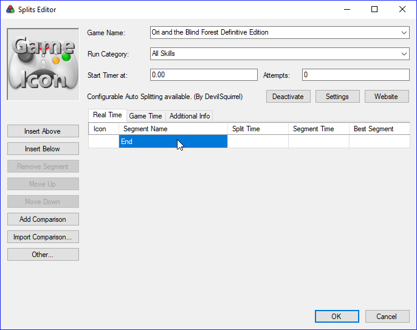
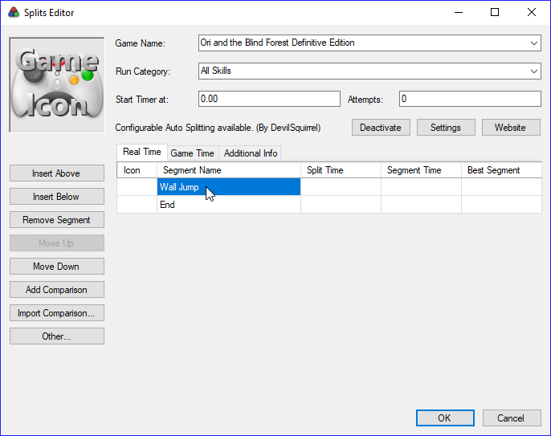
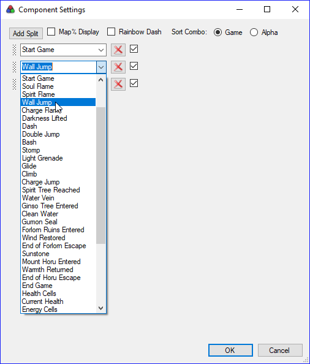

Splits & Layout¶
Splits¶
Until now, you had a unique split. The split will be used to record the timer value when you finishes the run. This is your end game split. Before doing anything, we will give that split a name. It can be whatever you want, but we will name it “End” to keep it explicit.

We can now add as many splits as we want, one by one. As an example we will add the “Wall Jump” split to our layout. To do so we first need to to hit Insert Above then give the new split the name “Wall Jump”.

We also need to add it to our autosplitter settings to make it split when we actually get wall jump. For that we need to hit Settings, and add the correct autosplit.

That way, we can now add a split for Dash, for Double Jump, for Bash, …
Warning
Everytime you add a new split, you need to make sure that you add its related autosplit and keep everything in the right order. To check that your autosplitter is correctly set up if you don’t count “Start Game” which only starts the timer and does not match any split, you need to have as many autosplits as splits on your layout !
For reference, here is the most common split list for All Skills No OOB/TA

Layout¶
Because the layout and the splits are independent, there are extra empty lines. To remove the unwanted lines, go to Edit layout… > Layout Settings > Splits
Then decrement the Total Splits value until the layout looks fine. You will
need to update this value everytime you add/remove a split.
LiveSplit offers a lot of customization tools. Just spend some time in the layout settings and build a LiveSplit layout you like.
Examples¶
Here are examples of what layout you can make with LiveSplit:


Now that we changed what we needed to, let’s save our changes. Right-click on the LiveSplit window, then both click Save Splits and Save Layout. LiveSplit will ask you to save 2 files:
- A LiveSplit Split file (
.lss)- A LiveSplit Layout file (
.lsl)
I highly recommend you to think about how you will organize your files already.
You will probably need a split file and a layout file for each game, and each
category of a game. For example, you can create a folder OriDE with
another All Skills No OOBTA inside it, containing both LiveSplit files.